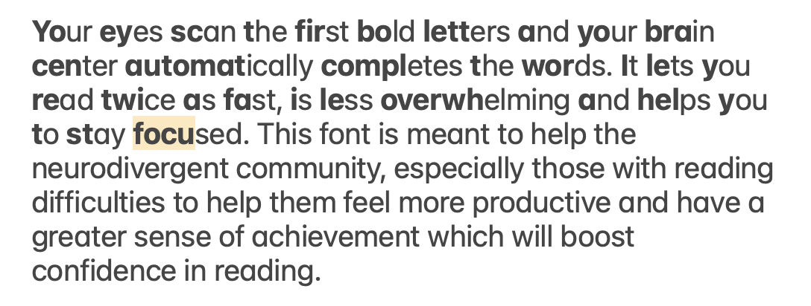
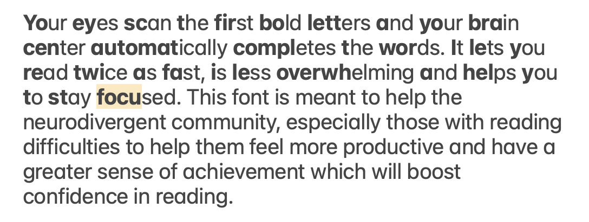

Bionic reading method:
Bold Beginnings
#WebDesign, #SchoolProject
visit DyslexicText page
 

Going through the paragraphs above helped me notice the patterns in the logic of this font. Let's take a look by reviewing words of n lengths (where n=number of characters in the word).
All words with an even number of characters (n%2==0) get bolded at the halfway point. i.e. the word "with" has "wi" bolded and "th" unbolded.
To make this logic into code:
(let i=0; i<word.length/2; i++) then bold word[i].
I found on online resource with the entirety of the Dracula novel in html format (shown below). My plan was to link this website to my code to generate the text displayed on screen.
This way the text displayed can be changed simply by swapping the source link in the inspector to another page.
This would've worked great if there hadn't been typos in the Dracula html document which I was referencing. Therefore, I opted to just copy-paste the paragraphs myself directly into my html document. However, the text displayed can still be changed in inspector by just changing what is written under the paragraph tag.